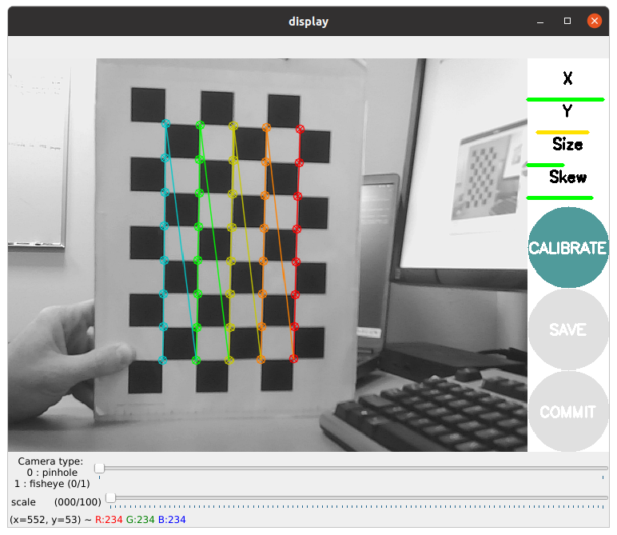

üî¨ Lab11: AprilTag#
üìå Objectives#
üìú Overview#
In this lab we will learn how fiducial markers are used in robotics. Specifically, we will utilize ROS tools to identify different April Tags and use the 3D position and orientation to determine the robot’s distance from an object.
A fiducial marker is an artificial feature used in creating controllable experiments, ground truthing, and in simplifying the development of systems where perception is not the central objective. A few examples of fiducial markers include ArUco Markers, AprilTags, and QR codes. Each of these different tags hold information such as an ID or, in the case of QR codes, websites, messages, and etc. We will primarily be focusing on AprilTags as there is a very robust ROS package already built. This library identifies AprilTags and will provide information about the tags size, distance, and orientation.
üõ†Ô∏è Lab Procedures#
Calibrate USB Camera#
A camera must first be calibrated to utilize computer vision based tasks. Otherwise, there is no reference for how large objects are in regards to the camera frame. The ROS Calibration Tool creates a calibration file that is then used by other ROS packages to enable size and distance calculations. The camera_calibration package utilizes OpenCV camera calibration to allow easy calibration of monocular or stereo cameras using a checkerboard calibration target. The complete guide can be found on the Camera Calibration Tutorial.
Disconnect the camera from the robot and plug it into the master computer. Then, run the following command to start the camera node:
ros2 run usb_cam usb_cam_node_exe --ros-args -p video_device:=/dev/video0
Run the camera calibrate package with the correct parameters (even though the checkerboard says it is a 10x7 board with 2.5 cm squares - the size the calibration tool uses is actually the interior vertex points which is 9x6). Open a new terminal on the Master and run the folowing:
ros2 run camera_calibration cameracalibrator --size 9x6 --square 0.025 --camera_name default_cam --no-service-check --ros-args -r image:=/image_raw
You should see a window open that looks like this:
In order to get a good calibration you will need to move the checkerboard around in the camera frame such that:
checkerboard on the camera’s left, right, top and bottom of field of view
X bar - left/right in field of view
Y bar - top/bottom in field of view
Size bar - toward/away and tilt from the
checkerboard filling the whole field of view
checkerboard tilted to the left, right, top and bottom (Skew)
As you move the checkerboard around you will see four bars on the calibration sidebar increase in length.
When the CALIBRATE button lights, you have enough data for calibration and can click CALIBRATE to see the results. Calibration can take up to a couple minutes. The windows might be greyed out but just wait, it is working.
When complete, it will display something similar to the following output:
**** Calibrating **** mono pinhole calibration... D = [-0.027598200869062808, -0.0273210932029884, 0.002259050714452529, 0.004238057516107571, 0.0] K = [517.6781776101559, 0.0, 330.5433124974498, 0.0, 522.269778659698, 247.60730067305022, 0.0, 0.0, 1.0] R = [1.0, 0.0, 0.0, 0.0, 1.0, 0.0, 0.0, 0.0, 1.0] P = [508.604248046875, 0.0, 333.1752989083179, 0.0, 0.0, 517.5308227539062, 248.01611962861898, 0.0, 0.0, 0.0, 1.0, 0.0] None # oST version 5.0 parameters [image] width 640 height 480 [default_cam] camera matrix 517.678178 0.000000 330.543312 0.000000 522.269779 247.607301 0.000000 0.000000 1.000000 distortion -0.027598 -0.027321 0.002259 0.004238 0.000000 rectification 1.000000 0.000000 0.000000 0.000000 1.000000 0.000000 0.000000 0.000000 1.000000 projection 508.604248 0.000000 333.175299 0.000000 0.000000 517.530823 248.016120 0.000000 0.000000 0.000000 1.000000 0.000000
Select the save button and then commit. Browse to the location of the calibration data and extract
cd /tmp tar xf calibrationdata.tar.gz
The
ost.yamlfile will be extracted from the compressed file. Move it to the appropriate ROS folder on the robot:cd ~/.ros mkdir camera_info mv /tmp/ost.yaml ./camera_info/default_cam.yaml
Stop the
usb_camnode and reopen it to verify that theusb_camnode is able to open the camera calibration file.You now are able to connect to a USB camera using ROS, display the image provided by the node, and have a calibration file that ROS can use to identify the size of objects in the frame.
{kind=link}
{kind=link}
Create a secure shell to the robot and edit the calibration data and replace “narrow_stero” with “head_camera”:
ssh pi@robotX
nano /home/pi/.ros/camera_info/head_camera.yaml
Rerun the lab4.launch file on the robot. You should see the camera feed reopen and see no errors in the command line (you may need to unplug and plug your camera back in).
AprilTag ROS#
Browse to the AprilTag_ROS package on the Master and edit the config file:
roscd apriltag_ros/config
sudo nano tags.yaml
This is where you provide the package with information about the tags it should identify. You should have gotten tags 0-3. Each of these tags is \(.165 m\) wide and should have a corresponding name: “tag_0” (in the final project, you might want to change these names as we will be providing you commands that correspond to each tag). In the tags.yaml file, add a line for each tag under “standalone tags” (replace … with last two tags):
standalone_tags:
[
{id: 0, size: .165, name: tag_0},
{id: 1, size: .165, name: tag_1},
...
]
Repeat these steps on the Robot.
Launch File - Apriltag_Ros#
Edit the lab4.launch file on the Master, calling the continuous_detection node provided by the apriltag_ros package. We need to set the arguments to the values provided by the usb_cam node:
Add the following arguments and parameters to the top of the launch file:
<arg name="launch_prefix" default="" />
<arg name="node_namespace" default="apriltag_ros_continuous_node" />
<arg name="camera_name" default="/usb_cam" />
<arg name="image_topic" default="image_raw" />
<!-- Set parameters -->
<rosparam command="load" file="$(find apriltag_ros)/config/settings.yaml" ns="$(arg node_namespace)" />
<rosparam command="load" file="$(find apriltag_ros)/config/tags.yaml" ns="$(arg node_namespace)" />
Add the apriltag node in the remote section:
<!-- apriltag_ros -->
<node machine="robot0" pkg="apriltag_ros" type="apriltag_ros_continuous_node" name="$(arg node_namespace)" clear_params="true" output="screen" launch-prefix="$(arg launch_prefix)" >
<!-- Remap topics from those used in code to those on the ROS network -->
<remap from="image_rect" to="$(arg camera_name)/$(arg image_topic)" />
<remap from="camera_info" to="$(arg camera_name)/camera_info" />
<param name="publish_tag_detections_image" type="bool" value="true" /> <!-- default: false -->
</node>
Save and exit.
Launch the lab4.launch file.
In a terminal on the master open the rqt_image_view node (rosrun rqt_image_view rqt_image_view) and select the tag_detections_image topic. If you hold up each tag, you should see a yellow box highlight the tag with an id in the middle of the tag.
In another terminal on the master echo the topic tag_detections. What information do you see? Will the apriltag_ros node identify only one tag at a time? Which value do you think we would use to determine distance from the tag? What kind of message is this? What package does this message come from?
Checkpoint#
Show an instructor that the apriltag_ros can identify tags and provides position data.
Summary#
You now have the ability to identify AprilTags and because you have a calibrated camera, you can detect the size, orientation, and distance of a tag.
Cleanup#
Kill all rosnodes and roscore!
You will then use the detector and known size of the stop sign to estimate how far the stop sign is from the camera. Lastly, you will create a node to identify and determine how far an April Tag is from the robot.
Given a stop sign with a known width, \(W\), we can place the stop sign at a known distance, \(D\), from our camera. The detector will then detect the stop sign and provide a perceived width in pixels, \(P\). Using these values we can calculate the focal length, \(F\) of our camera:
\(F = \frac{(P\times D)}{W}\)
We can then use the calculated focal length, \(F\), known width, \(W\), and perceived width in pixels, \(P\) to calculate the distance from the camera:
\(D' = \frac{(W\times F)}{P}\)
Use the above information and create two class variables, FOCAL and STOP_WIDTH, and a class function to calculate distance given a known FOCAL length and a known width of the stop sign, STOP_WIDTH. You will need to print the perceived width of the stop sign to determine the \(P\) value used in the calculation to find the focal length.
üí°Ô∏è Tip: Pay attention to what the
xandwvariables of theboxactually represent!
Create a new publisher that will publish the distance using Float32 std_msgs messages over the /stop_dist topic.
Publish the distance of each object seen in the image.
Remove any print statements after troubleshooting!
You will edit your stop sign detector on the Robot to calculate an estimated distance between the camera and the stop sign using triangle similarity.
Demonstrate the stop detector on the Master detecting a stop sign from the Robot’s camera.
Move detector to robot#
Copy the detector and node to the robot:
roscd lab4/training_images
scp stop_detector.svm pi@robotX:/home/pi/robot_ws/src/ece387_robot_spring202X-NAME/lab4/training_images/stop_detector.svm
roscd lab4/src
scp stop_detector.py pi@robotX:/home/pi/robot_ws/src/ece387_robot_spring202X-NAME/lab4/src/stop_detector.py
Remove the lines that display the video and instead print “Stop detected” if boxes is not empty.
Do you note a difference in processing speed?
Printing April Tag information#
Create a node on the master in lab4 called apriltag_dist.py. Import the appropriate AprilTag message. Subscribe to the tag_detections topic. Print the identified AprilTag ID and distance. If the camera sees multiple tags, it should print the information for each tag.
In your callback function you will want to create a for loop such as:
for tag in data.detections:
Use print statements to determine the characteristics of the message (you can also google the message).
Add the apriltag_dist node to the lab4 launch file.
Checkpoint 4#
Demonstrate the apriltag_dist node printing the ID and distance of each April Tag.
Report#
Complete a short 2-3 page report that utilizes the format and answers the questions within the report template. The report template and an example report can be found within the Team under Resources/Lab Template.
üìùÔ∏è Note: We will be primarily grading sections 3.1, 3.2, and 3.3 for this lab, but do include the entire lab as you will need other components for the final project report.
Turn-in Requirements#
[25 points] All checkpoints marked off.
[50 points] Report via Gradescope.
[25 points] Code: push your code to your repository. Also, include a screen shot of the apriltag_dist.py and stop_detector.py files at the end of your report.
scp ost.yaml pi@robotX:/home/pi/.ros/camera_info/head_camera.yaml